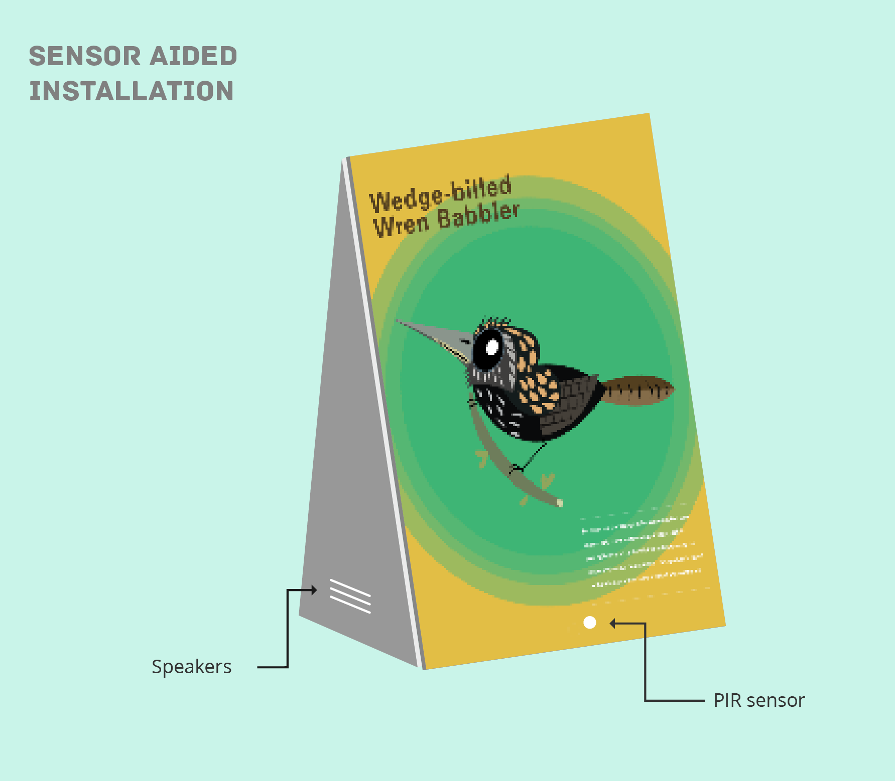
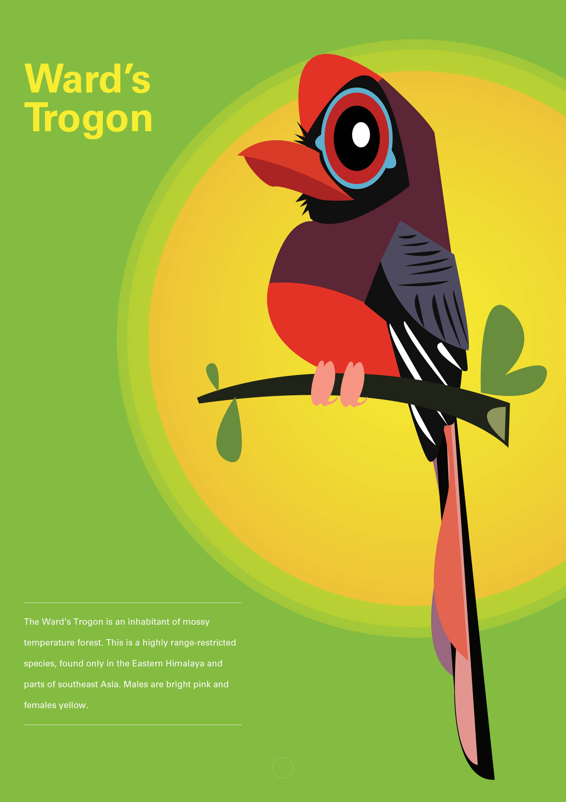
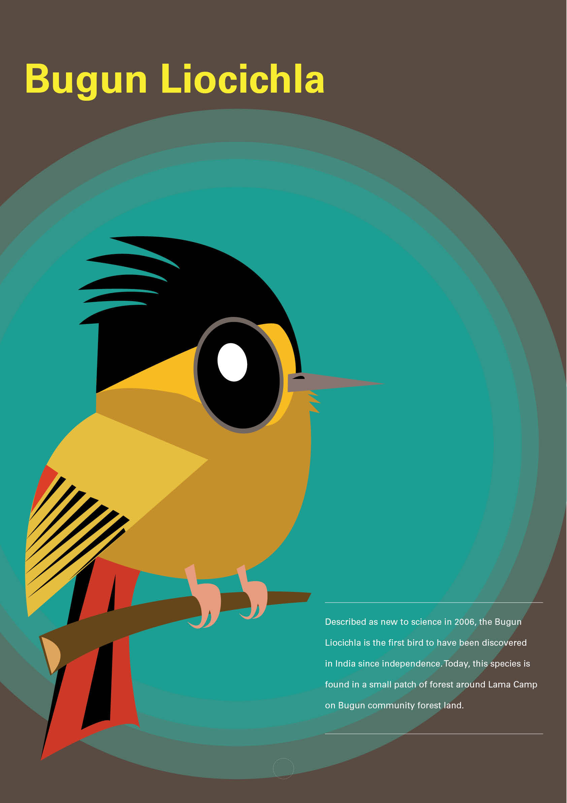
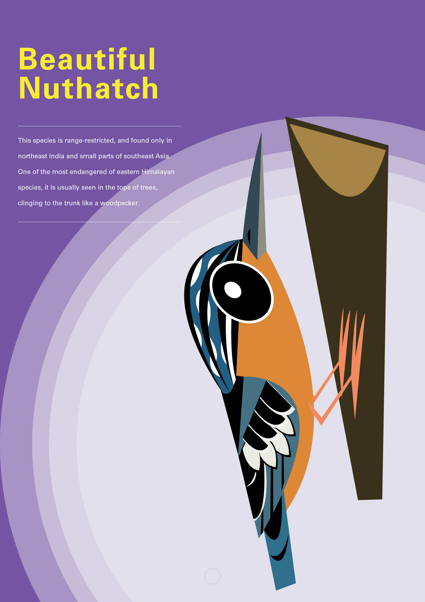
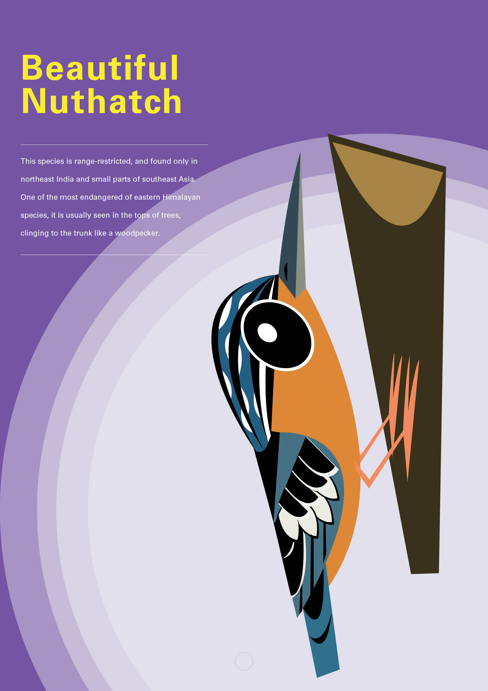
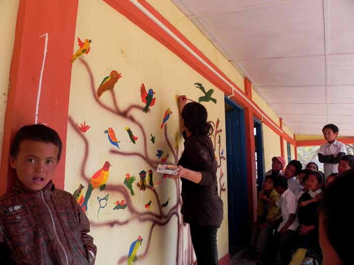
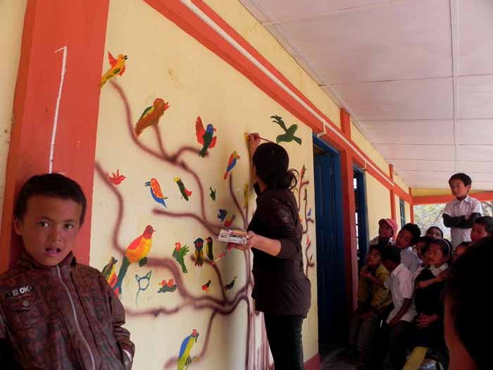

Sensor aided posters for Eaglesnest
In 2013, I designed an installation to mark the 20th death anniversary of the renowned ornithologist and conservationist Ted Parker. This installation was accepted for a display at the first Bird Festival of Arunachal Pradesh.
It was largely inspired by the sensor technology used in Camera Traps.
The posters on various significant birds of Eaglesnest played calls when approached by humans.
The posters were made by using PIR (Passive InfraRed) sensors to detect movements of living beings, which was then used as an input to trigger the bird calls. Drawing inspiration from the camera traps used for wildlife observation in Eaglesnest, I thought it'd be interesting to use similar technology to make an aesthetic product which the children could easily play with and understand.




 
The posters were designed to mark the spread awareness about the 5 most significant and endangered species of birds of Arunachal. The illustration of the bird was made by Rohan Chakravarty (Green Humour), a very talented cartoonist.

The posters were designed to mark the spread awareness about the 5 most significant and endangered species of birds of Arunachal. The illustration of the bird was made by Rohan Chakravarty (Green Humour), a very talented cartoonist.

 

 At the bird festival, I also helped to bring together a group of children in a local school and make a wall art. Each student drew one bird which they wanted to save in Arunachal and I gave the finishing touch to the tree.
At the bird festival, I also helped to bring together a group of children in a local school and make a wall art. Each student drew one bird which they wanted to save in Arunachal and I gave the finishing touch to the tree.
note: There were several racial disputes around the same time in Arunachal Pradesh because of which a lot of students could not attend. We wish to keep a special session in the next bird festival where they can view these posters and hack them to make something new.